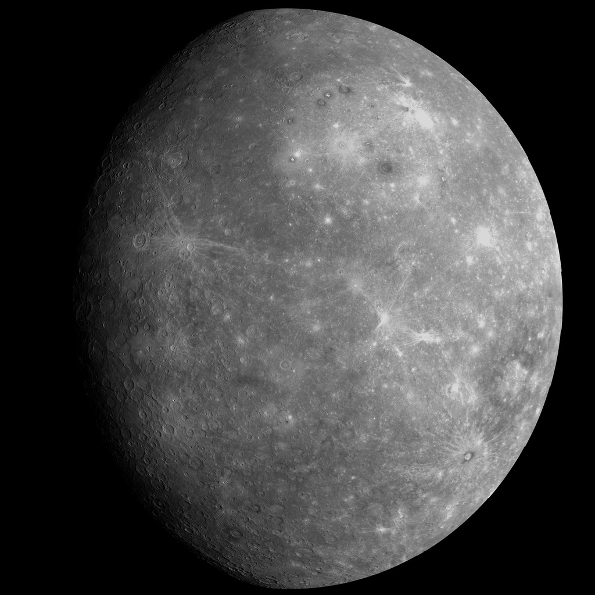

Mercury

- The Mercury
-
Mercury is the smallest planet in our solar system and nearest to the Sun and it
is only slightly larger than Earth's Moon. Its surface is covered in tens of thousands of impact craters.
-
From the surface of Mercury, the Sun would appear more than three times as large as it does when viewed from Earth, and the sunlight would be as much as 11 times brighter.
-
Despite its proximity to the Sun, Mercury is not the hottest planet in our solar system— that title belongs to nearby Venus, thanks to its dense atmosphere. But Mercury is the fastest planet to orbit the Sun
- Planet Type
- Moons
- Orbital Period
- Rotation
- Mercury spins slowly on its axis and completes one rotation every 59 Earth days
- Diameter
- Mass
- Volume
- Composition
- approximately 70% metals
- approximately 30% silicate material
- Temperature
- During day, 800 degrees Fahrenheit (430 degrees Celsius)
- Since Mercury has no atmoshpere, thus, at night time temperatures on the surface can drop to minus 290 degrees Fahrenheit (minus 180 degrees Celsius)
- Facts
- Mercury has volcanoes, but are no longer active
- Mercury has some extreme temperature changes
- Mercury was named after the Roman messenger god
- Mercury has a central core, a rocky mantle, and a solid crust.
- References